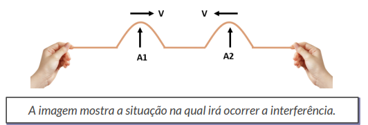
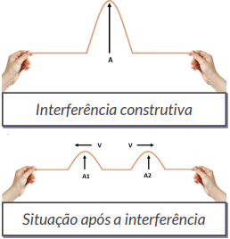
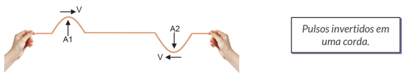
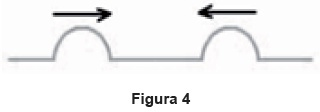
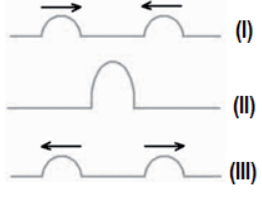
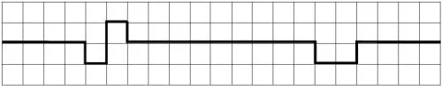

E.E. República da Costa Rica
22/02/2024
Uma onda mecânica não pode se propagar na ausência de um meio material, ou seja, uma onda mecânica não se propaga no vácuo, pois não há meio material. A propagação de uma onda mecânica através de um meio material elástico envolve o transporte de energia. Uma onda sonora se propagando no ar é um exemplo de onda mecânica.
As ondas eletromagnéticas são formadas pela variação de dois campos, um elétrico e outro magnético. Essa onda pode se propagar no vácuo e atravessar certos meios materiais. A luz, por exemplo, além de se propagar no vácuo, pode se propagar através de meios transparentes, como o vidro. Todas as ondas eletromagnéticas têm em comum sua velocidade de propagação no vácuo: 299.792.458 m/s.
Os diversos tipos de ondas eletromagnéticas, como as ondas de rádio, micro-ondas, raios X, radiação infravermelha etc., são todas de mesma natureza, diferindo entre si apenas pela frequência. O conjunto de todas as ondas eletromagnéticas está representado no espectro eletromagnético.
Aula 1 - Ondas - Parte 1
04/03/2024
O valor A é denominado amplitude da onda. Ele permanece constante ao longo da corda quando a propagação é conservativa (não há dissipação de energia) e diminui ao longo da corda quando a propagação é dissipativa (caso real, em que parte da energia da onda se dissipa). Se duas ondas diferem apenas na amplitude e propagam-se no mesmo meio, a mais intensa é aquela que tem maior amplitude.
Crista e vale: considerando a figura no plano vertical, chamamos os pontos mais altos da onda A1, A2 e A3 de cristas, e os pontos mais baixos, B1 e B2 de vales ou depressões. É comum dizermos, também, que os pontos que oscilam "juntos" estão em fase. Assim, os pontos A1, A2 e A3 estão em fase entre si, e os pontos B1 e B2 também estão em fase entre si. Ou seja, quando um deles está "para cima", os outros também estarão, e vice-versa. Pontos que não mantêm a mesma configuração oscilam fora de fase; aqueles que mostram a configuração inversa, por sua vez, estão em oposição de fase, como os pontos A1 e B1 , por exemplo.
Representa a distância entre dois pontos sucessivos da onda que estão na
mesma fase de oscilação. Pode ser pensado, também, como a distância que
uma perturbação percorre durante um período T.
O período (T) é o intervalo de tempo necessário para que um comprimento
de onda (𝝀), ou uma onda completa, passe por um determinado ponto do
meio. Cada pulso emitido corresponde a uma oscilação completa da fonte.
Frequência é o número de vez que um evento ocorre em determinado tempo
f = 1/T ou T = 1/f
Hertz = ciclo por segundo
V = d/T
V = 𝝀/T -> comprimento de onda
V = 𝝀 . f
O sonorizador é um dispositivo físico implantado sobre a
superfície de uma rodovia de modo que provoque uma trepidação e ruído
quando da passagem de um veículo sobre ele, alertando para uma situação
atípica à frente, como obras, pedágios ou travessia de pedestres.
Ao passar sobre os sonorizadores, a suspensão do veículo sofre vibrações
que produzem ondas sonoras, resultando em um barulho peculiar. Considere
um veículo que passe com velocidade constante igual a 108 km/h sobre um
sonorizador cujas faixas são separadas por uma distância de 8 cm.
Qual é a frequência da vibração do automóvel percebida pelo condutor
durante a passagem nesse sonorizador?
Aula 2 - Ondas - Parte 2
18/02/2024
Um dos fenômenos mais importantes da Ondulatória é a interferência de ondas.
Observe a imagem abaixo, que consiste na formação de duas ondas propagando-se em sentidos contrários e com amplitudes A1 e A2.
O encontro dessas ondas resultará numa interferência, ou seja, numa superposição que formará uma única onda resultante, com amplitude A.
Nesse caso, dizemos que a interferência é construtiva, sendo a amplitude A resultante da soma das amplitudes A1 e A2.
A = A1+A2
Depois da superposição, cada pulso segue na sua direção inicial, com suas características iniciais conservadas.
Agora, observem a imagem com dois pulsos invertidos, ou seja, uma crista e um vale.
O que acontecerá quando esses pulsos se encontrarem?
O encontro desses pulsos resultará numa interferência destrutiva, ou seja, um pulso anula parcial ou totalmente o outro.
A amplitude resultante é dada pela diferença entre as amplitudes A1 e A2
Se A1 = A2, temos que A = 0
Se A1 ≠ A2, temos que A=|A1-A2|
Após a superposição dos pulsos, ambos continuam se propagando com suas características iniciais.
(Udesc)Em uma corda, dois pulsos de onda se propagam em sentidos opostos, conforme mostra a figura 4.
Assinale a alternativa que representa corretamente a propagação dos pulsos de onda, nos seguintes momentos: antes da interferência (I), durante a interferência (II) e após a interferência (III), respectivamente.
Resposta:
a. 
(FGV) A figura mostra dois pulsos que se movimentam em sentidos contrários, um em direção ao outro sobre a mesma corda, que pode ser considerada ideal.
No momento em que houver sobreposição total, a disposição esperada para os pontos da corda estará melhor indicada por:
Resposta:
c.